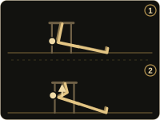
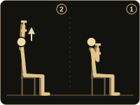

نسخة البيت
برامج 3 و4 و5 أيام · كل تمرين بالدمبل أو بدونه
بروتوكول التحول: نسخة البيت
برامج 3 و4 و5 أيام. كل تمرين له نسختان: بالدمبل وبدون دمبل.
MDAAR21 · HOME EDITION
اختر برنامجك
تمرّن في البيت بالدمبل أو بدونه. كل تمرين في الكتاب له نسختان، واختر اللي تناسب أدواتك.
بالدمبل إذا عندك دمبل في البيت
بدون دمبل بوزن جسمك أو بأدوات البيت
مسودة تصميم · التمارين أمثلة
DAY 1 · FULL BODY
اليوم الأول · الجسم كامل
لكل تمرين نسختان. اختر وحدة وكمّل فيها. 3 × 8–12 تعني 3 مجموعات، كل مجموعة من 8 إلى 12 تكرار. اضغط «شاهد الشرح» أو صوّر الرمز.
1السكوات
الفخذ والمؤخرة
بالدمبل
سكوات بالدمبل أمام الصدرGoblet Squat

3 × 8–12راحة 90 ث
QRرابط المقطع يضيفه ياسر
بدون دمبل
سكوات بوزن الجسمBodyweight Squat

3 × 12–15راحة 60 ث
QRرابط المقطع يضيفه ياسر
2الضغط للصدر
الصدر والترايسبس
بالدمبل
ضغط دمبل على الأرضDumbbell Floor Press

3 × 8–12راحة 90 ث
QRرابط المقطع يضيفه ياسر
بدون دمبل
تمرين الضغطPush-up

3 × 8–15راحة 90 ث
QRرابط المقطع يضيفه ياسر
3السحب للظهر
الظهر والبايسبس
بالدمبل
سحب دمبل بيد وحدةOne-arm Dumbbell Row

3 × 8–12راحة 90 ث
QRرابط المقطع يضيفه ياسر
بدون دمبل
سحب تحت الطاولةInverted Table Row

3 × 8–12راحة 90 ث
QRرابط المقطع يضيفه ياسر
4الضغط للأكتاف
الأكتاف والترايسبس
بالدمبل
ضغط دمبل فوق الرأسDumbbell Overhead Press

3 × 8–12راحة 90 ث
بدون دمبل
ضغط بايكPike Push-up

3 × 8–12راحة 90 ث